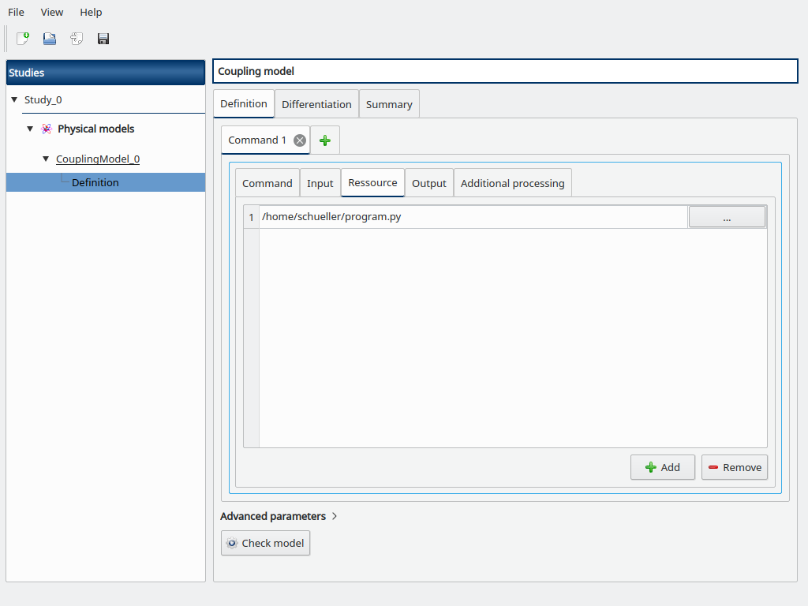

Logistic model¶
Here we will demonstrate some coupling model capabilities on the logistic model from the OpenTURNS documentation.
1- Problem statement¶
The logistic growth model is the differential equation:
for any , with the initial condition:
where :
and are two real parameters,
is the size of the population at time ,
is the initial time,
is the initial population at time ,
is the final time.
The  parameter sets the growth rate of the population. The parameter acts as a competition parameter which limits the size of the population by increasing the competition between its members.
parameter sets the growth rate of the population. The parameter acts as a competition parameter which limits the size of the population by increasing the competition between its members.
In [1], the author uses this model to simulate the growth of the U.S. population. To do this, the author uses the U.S. census data from 1790 to 1910. For this time interval, R. Pearl and L. Reed [2] computed the following values of the parameters:
Our goal is to use the logistic growth model in order to simulate the solution for a larger time interval, from 1790 to 2010:
Then we can compare the predictions of this model with the real evolution of the U.S. population.
We can prove that, if , then the limit population is:
In 1790, the U.S. population was 3.9 Millions inhabitants:
We can prove that the exact solution of the ordinary differential equation is:
for any .
2- Define the model¶
We will emulate an external code using a Python script in order to demonstrate the coupling model.
First we need to create a template file named input.txt.in for our input variables with a text editor:
y0=@y0@
a=@a@
b=@b@
This file will define the input file passed to the external code with the actual input values.
Then create a Python script named program.py that will act as the external code:
import math as m
def logisticSolution(t, y0, a, b):
t0 = 1790.0
y = a * y0 / (b * y0 + (a - b * y0) * m.exp(-a * (t - t0)))
return y
exec(open("input.txt").read())
Y = [logisticSolution(t, y0, a, b) for t in range(1790, 2011)]
with open("Y.txt", "w") as f:
for y in Y:
f.write("%.17g\n" % y)
This script reads the actual input file input.txt, computes the Y time series according to y0, a, b and writes it into the Y.txt file.
Now create a Python script named post.py that will allow one to post-process the time series values:
import math as m
with open("Y.txt") as f:
Y = [float(line) for line in f.readlines()]
Y_min = min(Y)
Y_max = max(Y)
Y_mean = sum(Y) / len(Y)
Y_last = Y[-1]
with open("output.txt", "w") as f:
f.write("Y_min=%.17g\n" % Y_min)
f.write("Y_max=%.17g\n" % Y_max)
f.write("Y_mean=%.17g\n" % Y_mean)
f.write("Y_last=%.17g\n" % Y_last)
This script reads the Y time series from the Y.txt file, computes the interest variables and write them into the output.txt file.
Our coupling will consists in several steps:
generating input variables from input.txt.in
running program.py
running post.py
reading output values from output.txt
2-1 Create the study¶
Click on the  in the tool bar to create a new study.
in the tool bar to create a new study.

2-2 Create the coupling physical model¶
To define the physical model, click on the button Coupling model of the window shown above.
The following window appears and a physicalModel item is added in the study tree:

Click on the Model definition box of the model diagram to create the following window.

Fill the Command box with python program.py
Go to the Input sub-tab, browse for the path to input.txt.in for the Template file field, and the Configured file field is automatically set to input.txt.
Then add the y0, a and b variables and their token with surrounding @ to mimic the content of input.txt.in, and default values y0=3.9e6, a=0.03134, and b=1.5887e-10.

Go to the Resource sub-tab, browse for the path to the program.py file.
Now add a new Command tab (click on the + button) to add a new coupling step, a new “Command 2” tab is opened.
Fill the Command box with python post.py

Go to the Resource sub-tab, browse for the path to the post.py file.

Go to the Output sub-tab, fill the Output file field with output.txt then add the following output variables we defined in post.py, and set their corresponding tokens:
Y_min
Y_max
Y_mean
Y_last

Click on the Check model button in the bottom, the elapsed time should appear on success. You can go to the Summary tab to read the output values.

Another post-processing option to estimate the mean would be to use the trapezoidal or Simpson rule from scipy (in post.py):
from scipy import integrate
Y_mean = integrate.trapz(Y)
Y_mean = integrate.simps(Y)
Now suppose that we want to estimate the mean of the population Y before it exceeds the threshold to 100 millions inhabitants. We first have to find the index where y>100e6, then compute the mean from the partial time-series, else we fallback to a null value if the threshold is not exceeded (in post.py):
try:
idx = next(i for i,y in enumerate(Y) if y > 100e6)
Y_mean = sum(Y[:idx]) / idx
except StopIteration:
Y_mean = 0.0